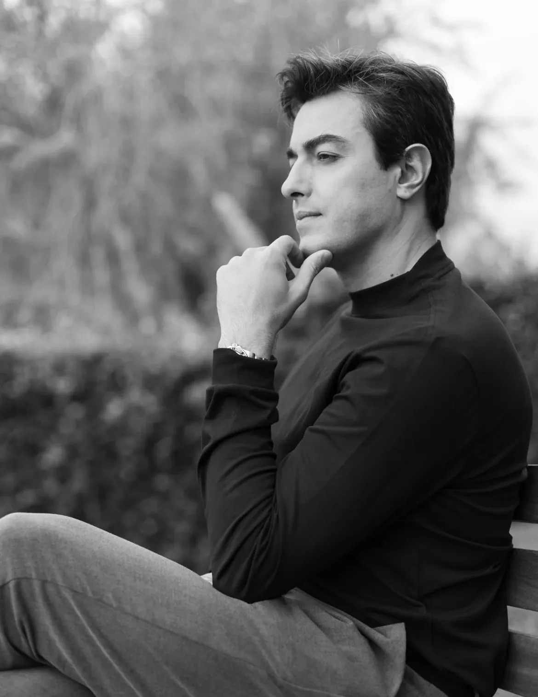
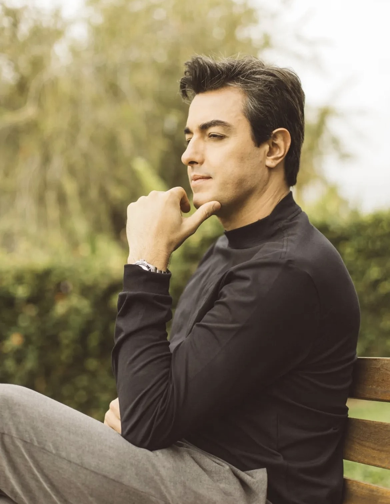
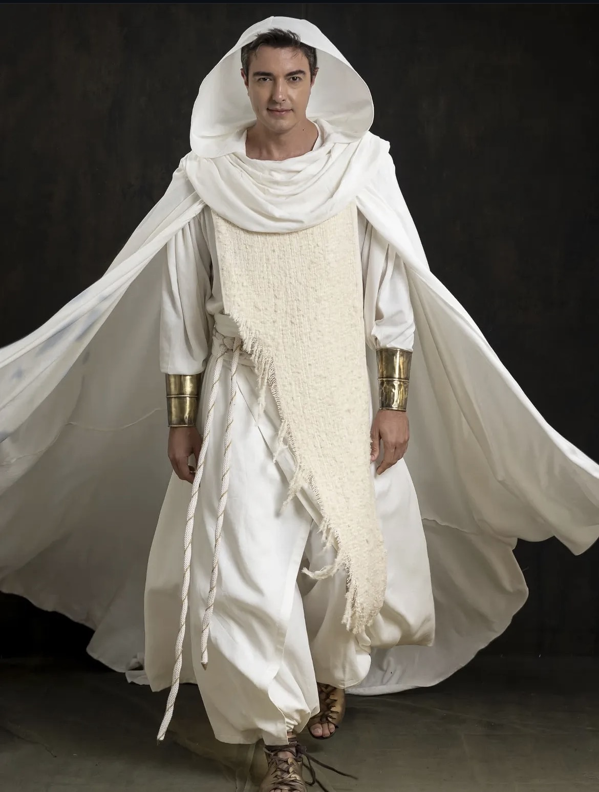
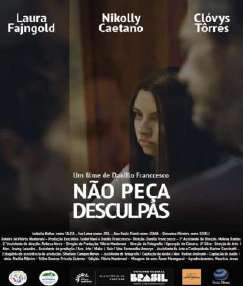
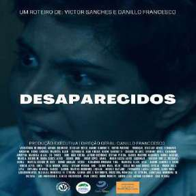
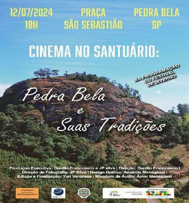
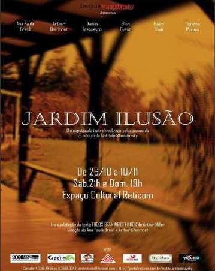
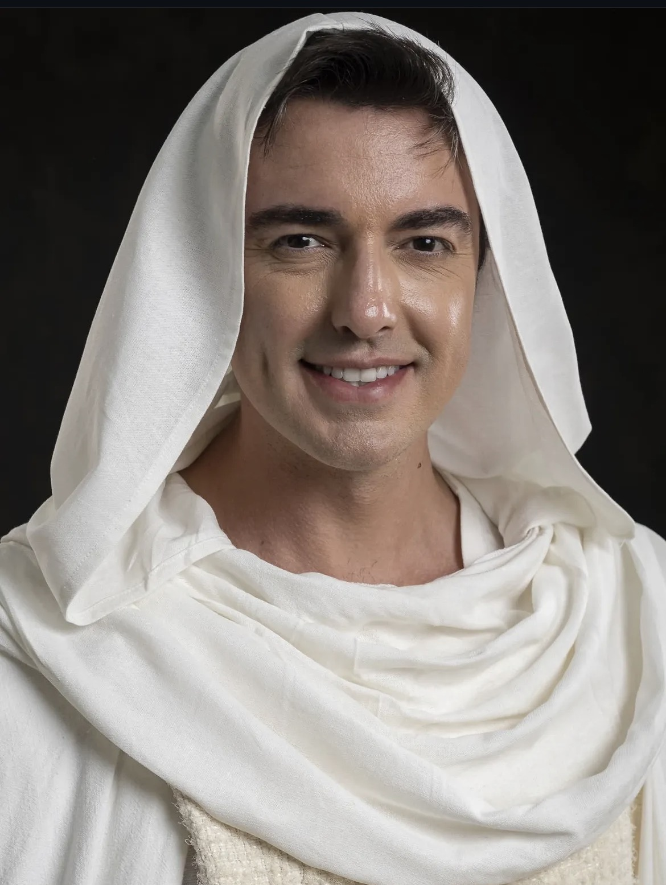
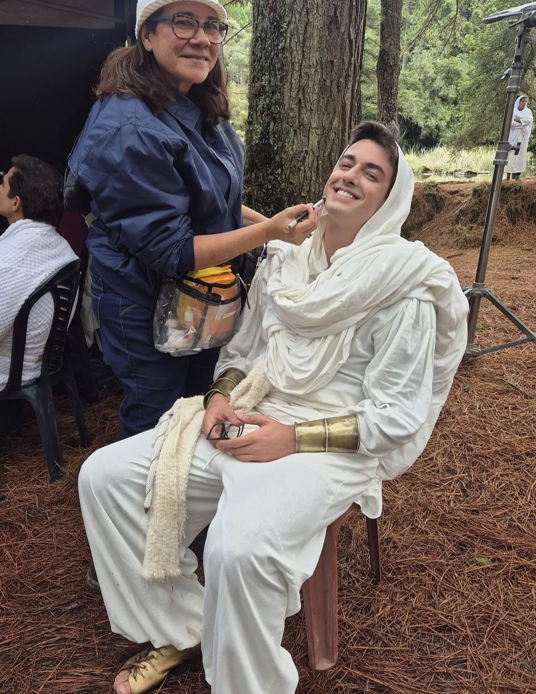

Cena 01 · Apresentação
Ator, diretor e produtor nascido em Extrema (MG), Danillo Franccesco transita entre São Paulo e Rio de Janeiro, na frente e atrás das câmeras.
Formado em atuação e direção pelo Latin American Film Institute, em parceria com a New York Film Academy (2012), complementou a formação com Fátima Toledo, Wolf Maya, Instituto Stanislavsky e workshops internacionais.
Na TV, esteve em A Vida de Jó e Paulo, o Apóstolo (Record), Sintonia (Netflix) e Patrulha Salvadora (SBT). No cinema, viveu Eduardo, marido de Celly Campello, em Um Broto Legal. No teatro, rodou o Brasil por três anos com Além da Vida, uma das peças mais assistidas do país.
Como diretor e produtor, assina o longa Não Peça Desculpas, sobre violência contra a mulher, além de documentários e curtas pela MED Produções. Desde 2013, forma novos artistas em workshops de cinema e leva sessões a céu aberto a bairros que nunca tiveram uma tela grande.

Cena 02 · TV e streaming

Na superprodução bíblica da Record, Danillo dá vida a um dos Filhos de Deus, o arcanjo Samuel: figura de luz e presença serena no embate entre o bem e o mal que atravessa a história de Jó.
Novela · Record · Disney+ · 2025O governador romano da província da Judeia, autoridade diante da qual Paulo é levado a julgamento.
Participação na 3ª temporada da série original Netflix.
Série infantojuvenil, 2ª temporada.
Protagonista Ênio (8 episódios) e Lucas, na websérie com mais de 1 milhão de views.
Cena 03 · Direção e produção

Um drama familiar sobre abuso, preconceito e violência contra a mulher, filmado em Extrema (MG) com elenco e equipe quase inteiramente da cidade.
Escrito para provocar reflexão sobre a violência contra a mulher no Brasil, o longa marcou a estreia de Danillo na direção de longas e foi premiado e indicado em festivais nacionais e internacionais, inclusive a Melhor Filme.

Produção e direção. O sequestro de jovens para tráfico de órgãos e exploração sexual.

Pedra Bela e Suas Tradições. Produção executiva e direção, exibido em praça pública.
Produção executiva e direção, com grande elenco e equipe.
Jovens sobreviventes de um apocalipse. Mais de 50 mil visualizações na primeira semana.
Cena 04 · Cinema e teatro
A cinebiografia da cantora que trouxe o rock para o Brasil, dirigida por Luiz Alberto Pereira. Danillo vive Eduardo, o marido por quem Celly deixou a carreira no auge. Trailer: youtu.be/62ZXEwH0SQE
Direção de Tristan Aronovich.
Suspense sobre abuso e violência contra a mulher.
Um jovem que fica paraplégico após um acidente de moto.
Direção de Edu Diux e Andrei Alan.
Direção de Renato Prieto. Cerca de 1 milhão de espectadores em quase 3 anos de turnê. Também em Nosso Lar.

Luiz, em adaptação de Arthur Miller. 2 anos em cartaz em SP e Festival de Curitiba 2014.
Texto de Newton Moreno. Um ano em cartaz em Extrema (MG).
Cena 05 · Filmografia
| 2025 | A Vida de Jó | Filho de Deus, arcanjo Samuel Novela · Record | TV |
| 2025 | Paulo, o Apóstolo | Festo, governador da Judeia Novela · Record · Disney+ | TV |
| 2025 | Ponto Final | Produção executiva e direção Curta-metragem | Direção |
| 2024 | Não Peça Desculpas | Produção executiva e direção Longa-metragem · festivais nacionais e internacionais | Direção |
| 2024 | Cinema no Santuário | Produção executiva e direção Documentário · Pedra Bela (SP) | Direção |
| 2023 | Desaparecidos | Produção e direção Curta-metragem | Direção |
| 2022 | Um Broto Legal | Eduardo Longa-metragem · Pandora Filmes · Prime Video | Cinema |
| 2022 | Sintonia | MC Rod dos Piseiros Série · Netflix · 3ª temporada | TV |
| 2021 | Eu, Nós, Você! | Produção e direção Curta-metragem | Direção |
| 2018 | Quatro Projeções | Ênio (protagonista) Websérie · 8 episódios | Web |
| 2017 | O Lar de Todas as Cores | Lucas Websérie · +1 milhão de views | Web |
| 2016 | As Centenárias | Direção, produção e atuação Teatro · texto de Newton Moreno | Teatro |
| 2015 | Offline: O Filme | Atuação e produção Longa-metragem · dir. Tristan Aronovich | Cinema |
| 2015 | Dissonante | Henrique Curta-metragem | Cinema |
| 2014–17 | Além da Vida | Elenco Teatro · dir. Renato Prieto · turnê nacional | Teatro |
| 2014 | Patrulha Salvadora | Flito, o vilão do amor Série · SBT · 2ª temporada | TV |
| 2012–14 | Jardim Ilusão | Luiz · produção executiva Teatro · Festival de Curitiba 2014 | Teatro |
| 2013 | Laudo 864 | José Média-metragem | Cinema |
| 2012 | Antebellum | Fernando Curta · dir. Edu Diux e Andrei Alan | Cinema |
Cena 06 · Marcas e publicidade
Um rosto de Netflix, Record e cinema que também dirige e produz. Danillo pode estrelar a sua campanha ou entregar a peça completa, do roteiro à finalização, pela MED Produções.
Filmes para TV, cinema e digital com atuação de quem vive o set há mais de 15 anos.
Reels, Stories e posts com linguagem cinematográfica para a audiência de @danillofranccesco.
Parcerias de longo prazo para marcas de esporte, bem-estar, moda e lifestyle.
Presença, apresentação e ativações em lançamentos, feiras e festivais.
Filmes para empresas, prefeituras e órgãos públicos, com direção e produção próprias.
Campanhas de conscientização sobre temas como a violência doméstica.
Vamos colocar a sua
marca em cena?
Cena 07 · Formação e impacto social
Além de atuar e dirigir, Danillo forma novos artistas e leva o cinema a quem nunca esteve diante de uma tela grande, valorizando a produção cultural do interior de Minas Gerais e São Paulo.
Workshops internacionais com Tristan Aronovich, David Bridel, Eric Sherman e Marjo-Riikka Mäkelä. Domínio de técnicas que tornam suas oficinas completas para quem quer atuar e dirigir.
Um projeto para a sua cidade, escola ou secretaria?
Cena 08 · Para produtores de elenco


Créditos finais
Fim.